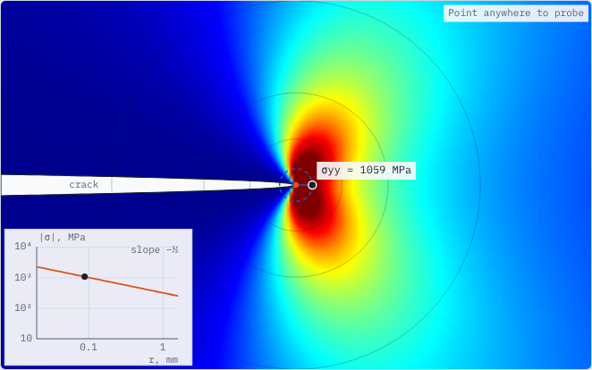
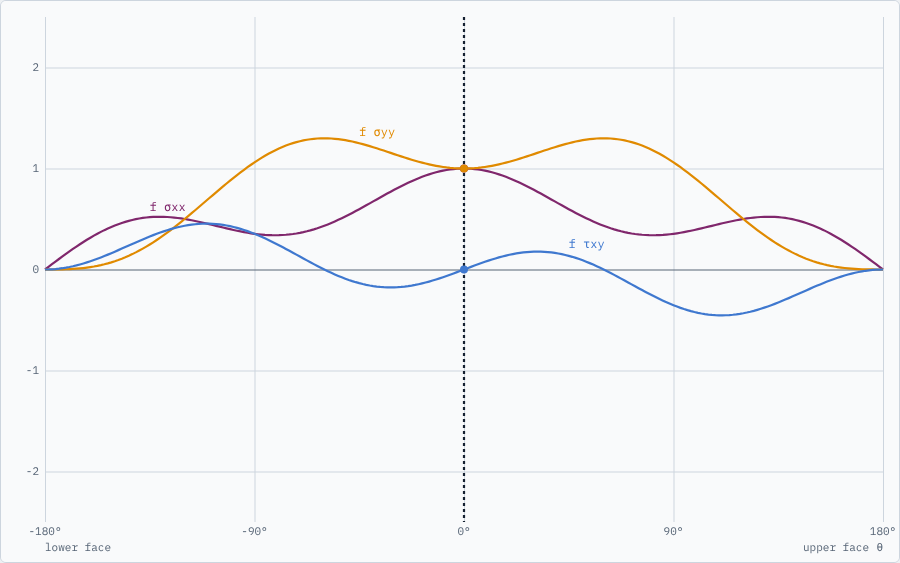
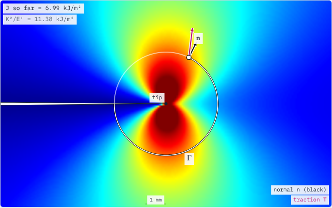
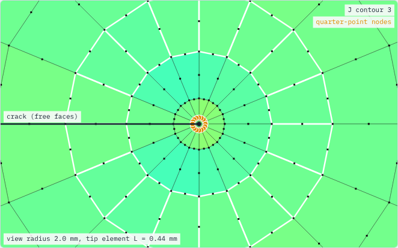
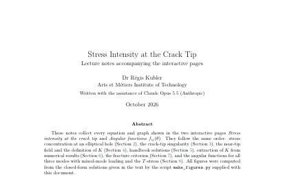

Interactive pages that build fracture mechanics step by step: stress concentration, the crack-tip singularity and K, the angular functions, the J-integral for elastic–plastic materials, and how finite element software computes K and J. Every figure is computed live in the browser. The linear elastic fracture mechanics (LEFM) material is taught at Arts et Métiers Institute of Technology, together with an introduction to nonlinear fracture mechanics. The remaining content is intended for second-year students of the AM²S MSc programme (Advanced Manufacturing and Materials Science).
Author: Dr Régis Kubler, Arts et Métiers Institute of Technology. Developed with the assistance of Claude Opus 5.5 (Anthropic), October 2026. Code: MIT · Documentation: CC BY 4.0.

Kt for an elliptical hole and its sharp-crack limit, the 1/√r singularity, the Williams field, handbook K, K from FE data, the fracture check, small-scale yielding, and K and the plastic zone through the thickness.

Modes I, II and III, mixed-mode loading and the T-stress, for different geometries and loadings.

Definition term by term, a live contour integration, path independence, J = K²/E′, the HRR field, T-stress and constraint, and J from a bend test.

Quarter-point elements, a spider-web mesh solved live, extraction methods, collapsed-element variants and an Abaqus how-to with links.

All equations and graphs of the pages with derivations and references. The LaTeX source and figure script are in the notes folder.